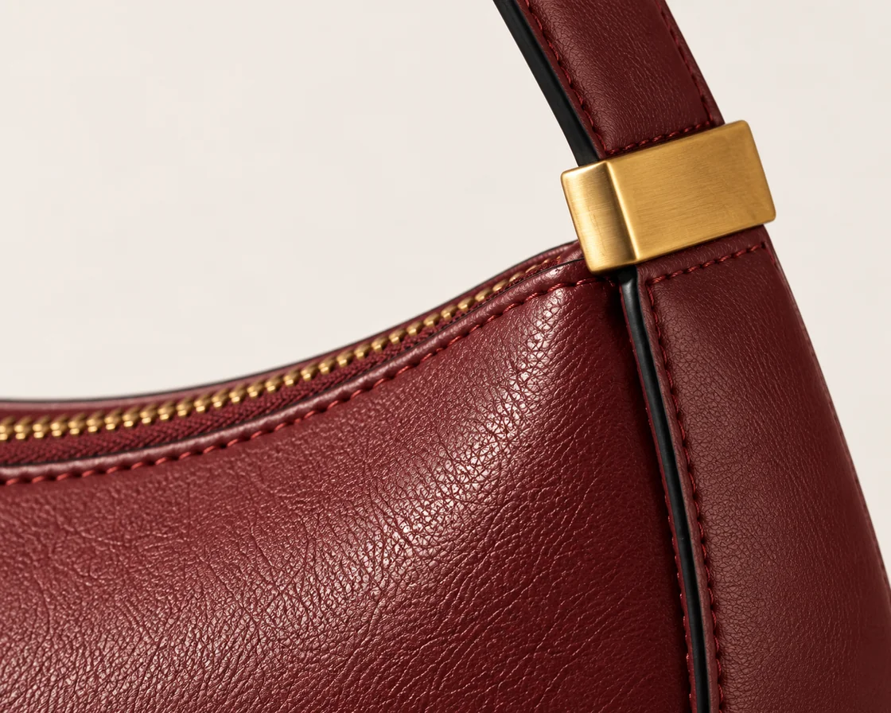

SABLE / Leather accessories / Self-initiated concept
A fashion identity shaped by the object.
A storefront designed around the choice.
01 / The brief
The fictional shopper wants one compact bag with presence, and enough product detail to choose a finish with confidence. SABLE explores that shopping task through two objects: the Arc shoulder bag and its quieter companion, the Fold cardholder.
The challenge was to make a leather accessories house feel assured without borrowing a fashion logo or inventing a heritage story. The object—not a status claim—provides the identity.
Fictional audience and design hypothesis. No customer research or commercial results are claimed.
02 / The visual language
Bodoni Moda’s high contrast and vertical rhythm give the wordmark a fashion register. Compact Manrope labels keep the buying decisions legible. Oxblood carries the brand; black frames the campaign; chalk gives the product room to be compared.
Unequal columns and decisive crops create tension. Product controls use square borders and plain labels, so the expression never obscures the shopping task.
Identity study / 01

03 / Art direction
The campaign uses hard light and a stone plinth to define the curved outline. Product views soften the light and remove the set, so surface and finish become easier to judge.
The campaign bag became the reference for subsequent generated views. The Ink image changes the colour of that same product; the close-up supports the material story. Fine grain, stitching and hardware still vary slightly—these are concept studies, not production photography.
04 / The shopping experience
The campaign introduces the Arc. A quieter product section makes Oxblood and Ink explicit, offers a full-form view and a labeled material detail, then keeps the add button still and easy to reach.
The browser-local bag distinguishes finishes, validates quantities, updates totals and supports removal. A native dialog contains keyboard focus and announces changes inside the active dialog. An unavailable-storage notice explains when the bag will last only for the current page session.
Try the finish & bag flow

05 / Design decisions
A centered “luxury” headline on a generic lifestyle image was rejected. A readable silhouette gives this fictional house a specific starting point.
Equal cards, soft gradients and parallax were rejected. Unequal campaign framing creates character; quiet product surfaces preserve finish comparison.
The motion-library index informed the decision to use stillness. Only brief colour feedback remains. No moving targets, intro, hidden content or scroll control.
06 / Platform translation
The accompanying namespaced Shopify section proposal reads actual products, variants, media, prices and availability, and uses native Shopify product forms. Editable product, collection, campaign image, heading and palette settings let the design be adapted through the theme editor.
This source has been checked separately from the HTML prototype. It has not been uploaded or tested on a Shopify theme. Theme integration, real inventory, cart behaviour and device testing remain separate work.
SABLE is fictional, self-initiated portfolio work by Oviks Media, developed with AI assistance for images, copy and implementation. The concept includes identity, original campaign/product studies, a responsive storefront, a working browser-local demo bag, and Shopify Liquid source. Prices, dimensions and materials are illustrative.
No client commission, real manufacturing, customer validation, sales result, payment, checkout or live Shopify implementation is claimed. A commercial launch would need physical products, verified specifications, final photography and separately tested store integration.
Explore the working prototype ↗